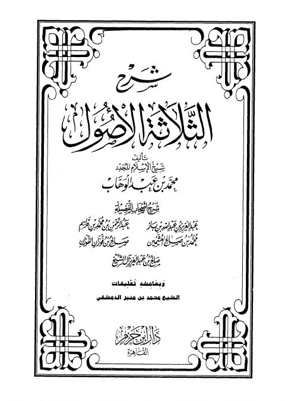

Downloads need an internet connection.
شرح الثلاثة الأصول لشيخ الإسلام المجدد محمد بن عبد الوهاب
Authors: عبد العزيز بن عبد الله بن باز محمد بن صالح العثيمين صالح بن فوزان الفوزان عبد الرحمن بن محمد بن قاسم الحنبلي النجدي
Editors: محمد بن منير الدمشقي
Publishers: دار ابن حزم بالقاهرة
**▫️ العنوان: شرح الثلاثة الأصول لشيخ الإسلام المجدد محمد بن عبد الوهاب** ▪️ المؤلف: #ابن_باز • #عبد_الرحمن_بن_قاسم • #العثيمين • #الفوزان ▫️ المحقق: #محمد_بن_منير_الدمشقي ▪️ الناشر: #دار_ابن_حزم ▫️ تاريخ النشر: 1428هـ 2007م ▪️ بلد النشر: القاهرة، #مصر ▫️ الطبعة: 1 ▪️ عدد الأجزاء: 1 ▫️ الصفحات: 496 ▪️ نوع الوعاء: #كتاب ▫️ التصنيف الرئيسي: #العقيدة_والمذاهب_والأديان ▪️ التصنيف الفرعي: #التوحيد ۪